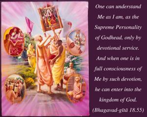
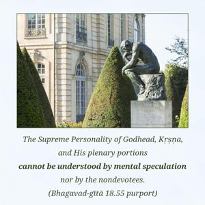
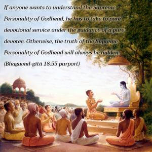

One can understand Me as I am, as the Supreme Personality of Godhead, only by devotional service. And when one is in full consciousness of Me by such devotion, he can enter into the kingdom of God.



The Supreme Personality of Godhead, Kṛṣṇa, and His plenary portions cannot be understood by mental speculation nor by the nondevotees. If anyone wants to understand the Supreme Personality of Godhead, he has to take to pure devotional service under the guidance of a pure devotee. Otherwise, the truth of the Supreme Personality of Godhead will always be hidden. As already stated in Bhagavad-gītā (7.25), nāhaṁ prakāśaḥ sarvasya: He is not revealed to everyone. No one can understand God simply by erudite scholarship or mental speculation. Only one who is actually engaged in Kṛṣṇa consciousness and devotional service can understand what Kṛṣṇa is. University degrees are not helpful.
One who is fully conversant with the Kṛṣṇa science becomes eligible to enter into the spiritual kingdom, the abode of Kṛṣṇa. Becoming Brahman does not mean that one loses his identity. Devotional service is there, and as long as devotional service exists, there must be God, the devotee, and the process of devotional service. Such knowledge is never vanquished, even after liberation. Liberation involves getting free from the concept of material life; in spiritual life the same distinction is there, the same individuality is there, but in pure Kṛṣṇa consciousness. One should not mistakenly think that the word viśate, “enters into Me,” supports the monist theory that one becomes homogeneous with the impersonal Brahman. No. Viśate means that one can enter into the abode of the Supreme Lord in one’s individuality to engage in His association and render service unto Him. For instance, a green bird enters a green tree not to become one with the tree but to enjoy the fruits of the tree. Impersonalists generally give the example of a river flowing into the ocean and merging. This may be a source of happiness for the impersonalist, but the personalist keeps his personal individuality like an aquatic in the ocean. We find so many living entities within the ocean, if we go deep. Surface acquaintance with the ocean is not sufficient; one must have complete knowledge of the aquatics living in the ocean depths.
Because of his pure devotional service, a devotee can understand the transcendental qualities and the opulences of the Supreme Lord in truth. As it is stated in the Eleventh Chapter, only by devotional service can one understand. The same is confirmed here; one can understand the Supreme Personality of Godhead by devotional service and enter into His kingdom.
After attainment of the brahma-bhūta stage of freedom from material conceptions, devotional service begins by one’s hearing about the Lord. When one hears about the Supreme Lord, automatically the brahma-bhūta stage develops, and material contamination – greediness and lust for sense enjoyment – disappears. As lust and desires disappear from the heart of a devotee, he becomes more attached to the service of the Lord, and by such attachment he becomes free from material contamination. In that state of life he can understand the Supreme Lord. This is the statement of Śrīmad-Bhāgavatam also. After liberation the process of bhakti, or transcendental service, continues. The Vedānta-sūtra (4.1.12) confirms this: ā-prāyaṇāt tatrāpi hi dṛṣṭam. This means that after liberation the process of devotional service continues. In the Śrīmad-Bhāgavatam, real devotional liberation is defined as the reinstatement of the living entity in his own identity, his own constitutional position. The constitutional position is already explained: every living entity is a part-and-parcel fragmental portion of the Supreme Lord. Therefore his constitutional position is to serve. After liberation, this service is never stopped. Actual liberation is getting free from misconceptions of life.